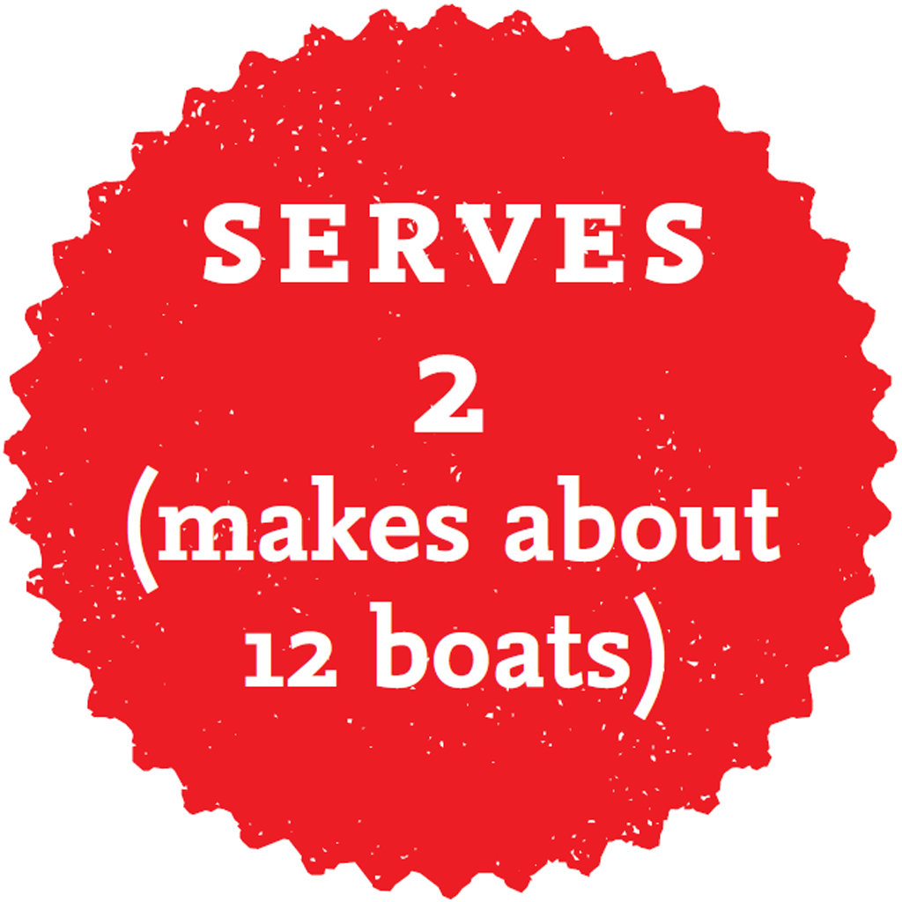

Spicy, fiery and packed with flavour, these little boats work as well for a dinner party as they do for a quick lunch. If you’re bored of turkey mince, try making these with beef mince or prawns instead.

MAKE AHEAD
INGREDIENTS
1 tbsp coconut oil
500g turkey mince
5 spring onions, finely sliced
2 cloves garlic, finely chopped
1 red chilli, finely sliced – remove the seeds if you don’t like it hot
1 tbsp fish sauce
juice of 1 lime
small bunch of coriander, leaves only, roughly chopped
2 avocados, roughly chopped
2 tomatoes, roughly chopped
2–3 baby gem lettuces, leaves separated
METHOD
Heat the coconut oil in a large frying pan over a high heat. Add the turkey mince and fry for 2–3 minutes, breaking up the mince as you cook. Add the spring onions, garlic and chilli and stir-fry for another 2 minutes, by which time the turkey mince should be cooked through. Add the fish sauce, lime juice and coriander. Mix everything together well, then remove the pan from the heat.
Combine the avocados and tomatoes in a bowl.
Lay out the lettuce leaves like little boats on your serving plate, then spoon in the turkey mixture and top with the avocados and tomatoes. Now go to munchies town and enjoy.